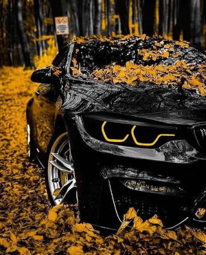
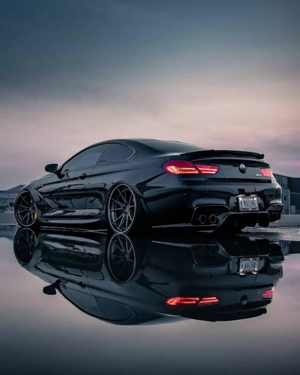
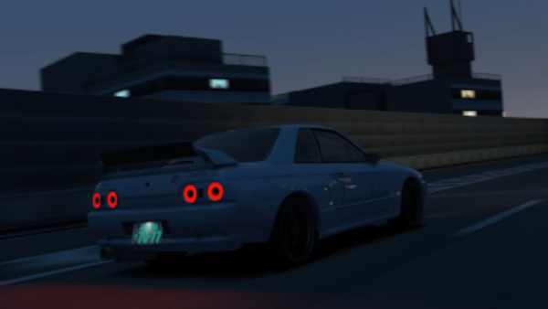

Esse sou eu
muitas fotos de carros irados como Bmw, Mercedes, Ferrari, Lotus Skyline e vários outros voce encontra no Carango's club, siga a gente nas redes sociais deixadas no Menu.
voce sabe o modelo dessa bmw? eu não me lembro
concorda que esse carro chama atenção de qualquer um?!
depois entre no site da bmw
se liga só nesse outro que estar por vir
A famosa Mercedes
Skyline antiga
